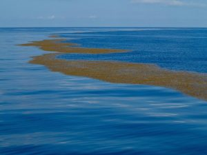
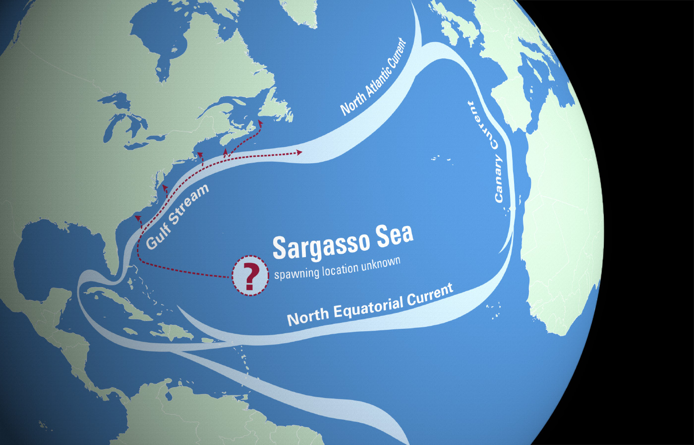

Sargasso Denizi: Kıyısı Olmayan Tek Deniz
Dünya üzerindeki uzaktan bakıldığında en kolay seçilen, en büyük su kütlelerine okyanus adı veriliyor. Okyanus, tanımı gereği çok belirsiz bir kavram, dolayısıyla dünyanın çeşitli yerlerinde okyanuslar farklı şekillerde sınıflandırılmakta. Denizler ise okyanusların karaların içlerine giren parçaları olarak tanımlanıyor. İnsanlık tarafından tarih boyunca defalarca unutuluyor olsa da, dünya yüzeyindeki tüm su kütleleri karaların boşluklarını dolduran, dünya için oldukça ince bir tabakadan ibaret. Doğal olarak denizler de dahil her su kütlesinin karalarla kıyısı olmak zorunda. Fakat Sargasso Denizi bu tanıma uymamakta.
Sargasso Denizi adı verilen bölge okyanus ortasındaki izole yapısından dolayı, hiçbir karaya kıyısı olmayan deniz olarak adlandırılıyor. Atlantik (Atlas)

Bütün bu özelliklerinden dolayı yolu bu coğrafyaya düşen denizciler çok zor durumda kalıyor. Kuzey Amerika’nın hemen doğusunda büyük bir alan kapladığından dolayı ilk olarak Kristof Kolomb ve tayfası tarafından, Coğrafi Keşifler sırasında gözlendi. 1492 yılında ilk kez Amerika kıtasına gitmek için yelken açan mürettebat, bu bölgenin içine girene kadar neyle karşı karşıya olduğunu bilmiyordu. Bölgenin yüzeyi alglerle kaplı olduğundan karaya yaklaştıklarını düşünmüşlerdi.
Elbette buraya kıyısız deniz demek mantıken mümkün değil, çünkü kıyı tanımı direkt olarak içinde kara kavramını barındırır. Fakat literatüre bu şekilde girmiş durumda ve karşılaşacağınız kaynaklarda veya sorularda bu özelliğine vurgu yapıldığını görmeniz mümkün. Tüm bu nedenlerden dolayı bu bölgeye dünyadaki kıyısız tek deniz diyebiliriz.